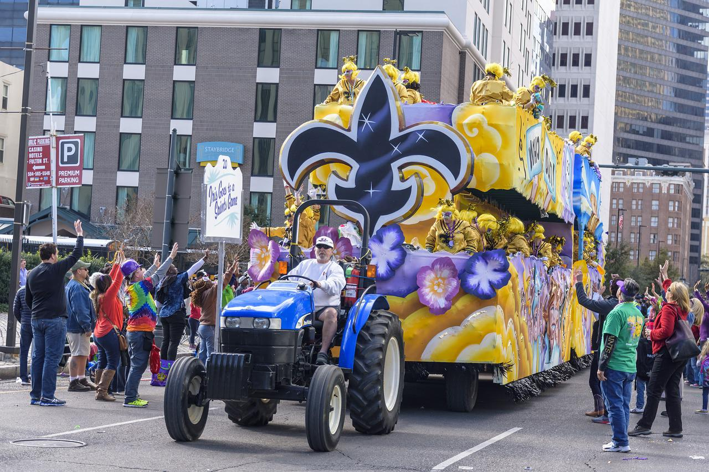

About the New Orleans Festival
History
The origins of Mardi Gras can be traced to medieval Europe, passing through Rome and Venice in the 17th and 18th centuries to the French House of the Bourbons. From here, the traditional revelry of "Boeuf Gras," or fatted calf, followed France to her colonies. By the late 1830s, New Orleans held street processions of maskers with carriages and horseback riders to celebrate Mardi Gras. Dazzling gaslight torches, or "flambeaux," lit the way for the krewe's members and lent each event an exciting air of romance and festivity. In 1856, six young Mobile natives formed the Mistick Krewe of Comus, invoking John Milton's hero Comus to represent their organization. Comus brought magic and mystery to New Orleans with dazzling floats (known as tableaux cars) and masked balls. Krewe members remained anonymous.

Traditions
Mardi Gras is about music, parades, picnics, floats and excitement. It's one big holiday in New Orleans! Revelers know to wear costumes or at least dress in purple, green, and gold, and adorn themselves with long beads caught from the floats of previous parades. You'll see a lot of crazy costumes, kids with their families are everywhere, and both locals and visitors having a great time. Parade goers will sit on the ground, throw balls, play music, eat great food and watch the crowds walk by between parades. On Mardi Gras day, the majority of non-essential businesses are shut down because of the celebration. Experienced revelers know to bring a large bag with them so they can haul away all the beads and trinkets they will catch from the parades!
Around the World
There are many other places that hold large celebrations, like
various cities in France, the Netherlands, Portugal and many, many
more. Many places have distinct food traditions as well, such as
pancakes on the Tuesday before Ash Wednesday in the UK (and other
places).
The British pancakes are like crepes and the most traditional way is
to serve them with lemon and sugar.
In Sweden, sweet rolls filled with cream, called “semla” are eaten
on the same day.
In Poland, you’d enjoy “paczki“, filled doughnuts, on the Tuesday
before Ash Wednesday.
Our Mayor
As Mayor of the great City of New Orleans, I invite you to visit our city to experience the excitement of Mardi Gras! Mayor of New Orleans The Carnival season officially begins each year on Jan. 6 -- the Feast of the Epiphany, also called Twelfth Night or Kings’ Day. Traditional balls are held in the weeks leading up to the big event. Spectacular parades with colorful, creative floats start rolling before Mardi Gras Day. Our private Carnival clubs, called krewes, take on royalty status and throw beads, doubloons and toys to parade goers. Visitors quickly learn to say, "Throw me something mister!" The culmination of Mardi Gras in New Orleans begins early on Mardi Gras Day when the Zulu Social Aid & Pleasure Club and the Rex Organization parade through the city. Music, food and elaborate costumes add to the fun-filled day of excitement for revelers of all ages. New Orleans, with its unmatched culture and world-famous music and cuisine, is an exciting place to be at any time of the year. We invite everyone to experience Mardi Gras at least once in their lifetime. Make your plans now to be a part of this great tradition and see firsthand why we say, "Laissez les bon temps rouler!" Sincerely, LaToya Cantrell Mayor of New Orleans